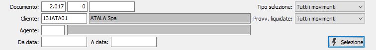
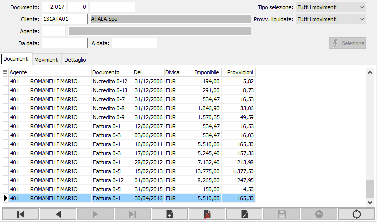
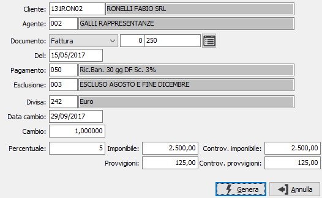
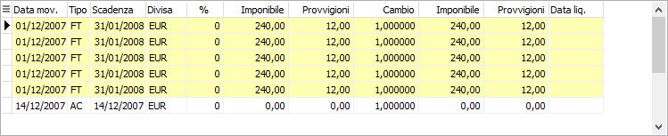
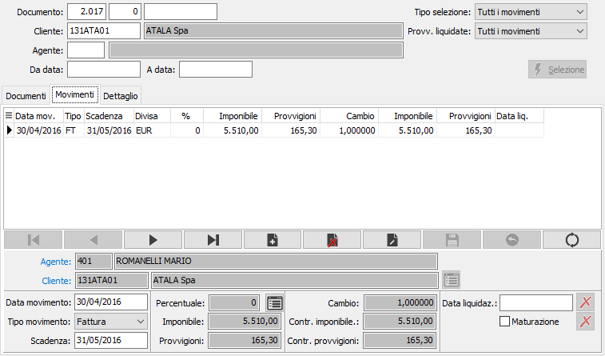
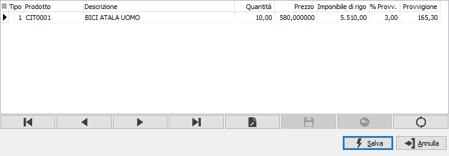
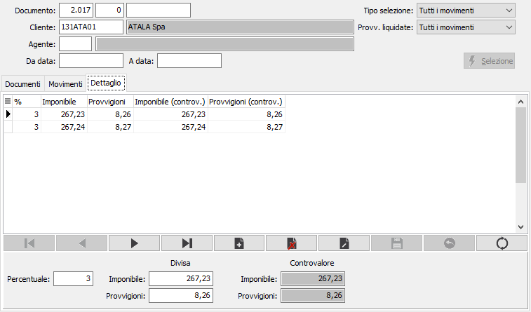

Manutenzione movimenti
Il programma consente di effettuare variazioni alle provvigioni degli agenti.
Accedendo al programma, appare la seguente finestra video Provvigioni, che consente, una volta inseriti i parametri di selezione, di visualizzare i documenti congruenti con i parametri forniti; i documenti sono selezionabili singolarmente per visualizzare le relative provvigioni .

DOCUMENTO: tre campi da utilizzare per richiamare un singolo documento di cui si vogliono manutenere le provvigioni; rispettivamente anno, serie e numero documento.
CLIENTE: codice del cliente di cui si intendono visualizzare i documenti per manutenere le provvigioni. Sul campo è attiva la funzione di ricerca (F9).
CODICE AGENTE: codice dell'agente di cui si intendono visualizzare i documenti per manutenere le provvigioni. Sul campo è attiva la funzione di ricerca (F9).
DA DATA: definisce la data dei documenti da cui iniziare la selezione. Lasciando il campo vuoto si intende iniziare la ricerca con il primo documento valido presente.
A DATA: definisce la data dei documenti con cui terminare la selezione. Lasciando il campo vuoto si intende concludere la ricerca con l'ultimo documento valido presente.
TIPO SELEZIONE: combo box per selezionare il tipo di documento da visualizzare. Valori ammessi: tutti i movimenti; fatture e note di credito; accrediti e insoluti.
PROVVIGIONI LIQUIDATE: combo box per selezionare il tipo di provvigioni da visualizzare. Valori ammessi: tutti i movimenti; movimenti non liquidati; movimenti già liquidati.
Inseriti i parametri, occorre confermarli tramite pressione del bottone Seleziona: vengono quindi visualizzati i documenti coerenti con i parametri inseriti ed è possibile selezionando il documento desiderato manutenere i movimenti provvigionali ed i relativi dettagli.
-
Linguetta documenti
Il risultato della selezione effettuata viene inserito nella griglia da dove è possibile effettuare la selezione dei documenti da analizzare e/o modificare. Nel caso in cui nei parametri di ricerca non sia stato specificato il cliente, questi viene visualizzato nella griglia. Sono inoltre riportati per ogni documento l'agente, il tipo documento, il numero e la data di riferimento, la divisa del documento, l'imponibile e l'importo delle provvigioni.

In questa sezione è anche possibile inserire manualmente un nuovo documento, tramite il pulsante Aggiungi è consentito inserire tutti i dati necessari al calcolo delle provvigioni nella seguente finestra.

CLIENTE: codice alfanumerico di 8 caratteri, presente in anagrafica clienti, che individua il cliente da trattare. Sul campo, la cui compilazione è obbligatoria, sono attive le funzioni di ricerca (F9). Il codice inserito in questo campo è quello del cliente a cui è intestato il documento.
AGENTE: codice alfanumerico di 3 caratteri, presente nella tabella Agenti, per indicare l’agente a cui verranno assegnate le eventuali provvigioni relative al documento. Viene proposto automaticamente l’Agente presente nell’anagrafica del cliente attivo, modificabile dall’utente. Sul campo sono attive le funzioni di ricerca (F9).
DOCUMENTO: tre campi che specificano il tipo di documento (fattura o nota di credito), la serie ed il numero.
DEL: data del documento.
PAGAMENTO: codice alfanumerico di 3 caratteri, presente nella tabella Modalità di pagamento, per definire le condizioni di pagamento del documento. La compilazione del campo è obbligatoria. Viene automaticamente presentato il codice presente in anagrafica clienti. Sul campo sono attive le funzioni di ricerca (F9).
ESCLUSIONE: inserire, se necessario, il codice del tipo di esclusione accordata per i pagamenti al cliente. Sul campo sono attive le funzioni di ricerca (F9).
DIVISA: codice alfanumerico di 3 caratteri, presente nella tabella Divise, per indicare la divisa stabilita per il documento. Viene proposta automaticamente la Divisa presente nell’anagrafica del cliente attivo, modificabile dall’utente. Sul campo sono attive le funzioni di ricerca (F9).
DATA CAMBIO: campo data per inserire l'eventuale data del cambio che consentirà la valorizzazione nella moneta di conto del documento. A conferma, viene visualizzato il cambio corrispondente, se presente in tabella Cambi.
CAMBIO: campo numerico per inserire l'eventuale cambio che consentirà la valorizzazione nella moneta di conto del documento. Viene visualizzato il cambio relativo alla data del campo precedente, se presente in tabella Cambi. Sul campo sono attive le funzioni di ricerca (F9).
PERCENTUALE: percentuale di provvigione riservata all’agente.
IMPONIBILE: campo numerico che indica l'imponibile del documento sul quale applicare la percentuale per il calcolo delle provvigioni.
PROVVIGIONI: campo numerico che indica il valore delle provvigioni, calcolate sull'imponibile, da imputare all'agente.
CONTROVALORE IMPONIBILE: campo numerico che indica l'eventuale controvalore, nella divisa di gestione, dell'imponibile.
CONTROVALORE PROVVIGIONI: campo numerico che indica l'eventuale controvalore, nella divisa di gestione, delle provvigioni.
Linguetta movimenti
Dopo aver selezionato, o inserito, il documento, nella linguetta dei movimenti compaiono le informazioni relative alle scadenze ed agli eventuali movimenti generati successivamente (incassi, insoluti) relativi al documento scelto. Nel caso in cui in le rate siano saldate queste appaiono con un colore di sfondo diverso dalle altre; la stessa cosa vale per i relativi accrediti.

La finestra di manutenzione movimenti è divisa in due sezioni: la prima è la griglia dove è possibile scorrere i singoli movimenti; la seconda è il pannello di inserimento tramite cui è possibile modificare il valore di alcuni campi, oppure inserire manualmente nuovi movimenti.

AGENTE: codice alfanumerico di 3 caratteri, presente nella tabella Agenti, per indicare l’agente a cui sono assegnate le provvigioni. Sul campo sono attive le funzioni di ricerca (F9) ed accesso rapido (CTRL+W).
CLIENTE: codice alfanumerico di 8 caratteri, presente in anagrafica clienti, che individua il cliente. Sul campo sono attive le funzioni di ricerca (F9) ed accesso rapido (CTRL+W).
DATA MOVIMENTO: indica la data riferita al movimento contabile di generazione; del documento di riferimento, se fattura o nota di credito; della registrazione per incassi e insoluti.
TIPO MOVIMENTO: indica la tipologia del movimento. Valori possibili: fattura, nota di credito, incasso ed insoluto.
DATA SCADENZA: indica la data di scadenza del movimento selezionato.
PERCENTUALE: percentuale di provvigione riservata all’agente. Questo campo è attivo solo se non sono gestite le provvigioni di rigo, altrimenti il valore è manutenibile dal Dettaglio.
IMPONIBILE: campo numerico che indica l'imponibile del documento sul quale applicare la percentuale per il calcolo delle provvigioni. Questo campo è attivo solo se non sono gestite le provvigioni di rigo, altrimenti il valore è manutenibile dal Dettaglio.
PROVVIGIONI: campo numerico che indica il valore delle provvigioni, calcolate sull'imponibile, da imputare all'agente. Questo campo è attivo solo se non sono gestite le provvigioni di rigo, altrimenti il valore è manutenibile dal Dettaglio.
DATA CAMBIO, CAMBIO, CONTROVALORE IMPONIBILE e CONTROVALORE PROVVIGIONI visualizzano i rispettivi valori derivanti dal documento inserito.
DATA LIQUIDAZIONE: indica la data in cui è stata effettuata la liquidazione delle provvigioni relative al movimento.
MATURAZIONE: se presente la spunta indica l'avvenuta maturazione della scadenza; ovvero l'avvenuta registrazione dell'incasso o pagamento della nota di credito, quest'ultimo se prevista la gestione in configurazione provvigioni.
 Tramite il pulsante di Assegnazione scadenza, attivo solo quando si inserisce un nuovo movimento è possibile assegnare al rigo un documento, selezionabile dalle scadenze, tramite una finestra in cui scegliere il documento adatto a quanto stiamo inserendo.
Tramite il pulsante di Assegnazione scadenza, attivo solo quando si inserisce un nuovo movimento è possibile assegnare al rigo un documento, selezionabile dalle scadenze, tramite una finestra in cui scegliere il documento adatto a quanto stiamo inserendo.
 Tramite il pulsante Dettaglio, è possibile richiamare i dati relativi alle singole righe della fattura; appare la seguente finestra.
Tramite il pulsante Dettaglio, è possibile richiamare i dati relativi alle singole righe della fattura; appare la seguente finestra.

In questa finestra è possibile modifica gli importi e le percentuali provvigioni, ma le modifiche non verranno riportate sulle fatture, la pressione del pulsante Salva consente di rigenerare i valori del dettaglio provvigioni.
Linguetta dettaglio
Il dettaglio è presente solo se gestite le provvigioni di rigo e riporta le aliquote ed i relativi importi inseriti nel documento.

PERCENTUALE: percentuale di provvigione riservata all’agente. Se viene modificata l'aliquota varia, di conseguenza, la provvigione ed il nuovo valore viene automaticamente riportato nel rispettivo movimento.
IMPONIBILE: campo numerico che indica l'imponibile del documento sul quale applicare la percentuale per il calcolo delle provvigioni. Se viene modificato l'imponibile varia, di conseguenza, la provvigione ed i nuovi valori vengono automaticamente riportati nei rispettivi movimenti.
PROVVIGIONI: campo numerico che indica il valore delle provvigioni, calcolate sull'imponibile, da imputare all'agente.
CONTROVALORE IMPONIBILE e CONTROVALORE PROVVIGIONI visualizzano i rispettivi valori, nella divisa di conto, derivanti dal documento inserito.